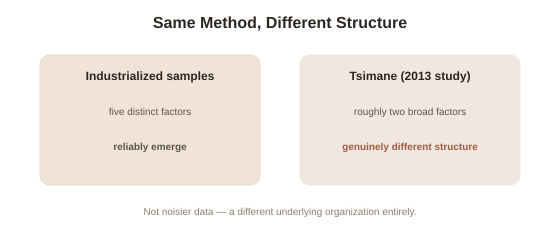

Chapter 4: Does the Big Five Structure Hold Up Everywhere?
Chapter 3 ended on a pointed methodological note: both the Big Five and HEXACO rest on the assumption that factor-analyzing personality-relevant language produces a comparable structure across different cultures and languages. That assumption has actually been tested directly, in one of the most striking, informative case studies of the entire model's limits — a population where the tidy five-factor structure essentially failed to appear at all.
Where the Big Five structure has held up well
It's worth starting with the genuinely positive replication evidence, since it's substantial and shouldn't be overshadowed by the harder case that follows. Cross-cultural lexical studies across dozens of literate, industrialized societies — spanning European, Asian, and other language families — have found a five-factor (or, per Chapter 3, six-factor) structure emerging with real consistency, and translated Big Five assessment instruments show reasonable measurement equivalence across many of these cultures, meaning scores can be meaningfully compared across them. This is a genuinely impressive degree of cross-cultural replication for a psychological model, and it's part of why the Big Five earned the broad scientific trust described in Chapter 1.
The Tsimane study: where the structure didn't hold
Anthropologist and psychologist Michael Gurven and colleagues ran a detailed 2013 study of the Tsimane, an indigenous, small-scale, largely subsistence-farming and foraging society in the Bolivian Amazon with limited market integration and formal education — a population meaningfully different from the literate, industrialized, market-embedded societies almost all prior Big Five research had drawn on. Administering a translated, carefully adapted personality inventory and running the same factor-analytic method used to originally derive the Big Five, Gurven's team did not find a clean five-factor structure emerging from the Tsimane data. Instead, the data supported something closer to a two-factor structure, with items that reliably separated into five distinct dimensions in industrialized samples instead clustering together into two broader dimensions resembling something like general prosociality and industriousness — a genuinely different underlying structure, not simply a noisier or less reliable version of the same five factors.

What might explain the difference
Gurven and colleagues proposed several candidate explanations, and it's worth being honest that the field hasn't fully settled which matters most. One is socioecological complexity (the idea that a five-dimensional personality structure may partly reflect the specific social complexity of large, differentiated, market-based societies — with many distinct social roles and relationships requiring correspondingly differentiated personality language to describe them): in a small, tightly-knit subsistence community where most people interact with most other community members across most domains of life, the specific behavioral distinctions a five-factor structure captures (say, differentiating extraversion from openness) may simply be less socially useful or less linguistically elaborated than in a large, complex, role-differentiated society. Another proposed factor is limited formal education and literacy, which may affect how personality-descriptive language itself gets structured and reported on a questionnaire, independent of any real underlying difference in personality organization. A further, more measurement-focused explanation is that translated self-report instruments, however carefully adapted, may not capture the same underlying constructs equally well across cultures with very different everyday vocabularies and frames of reference for describing behavior and disposition.
What this does and doesn't undermine
It's worth being precise, in the same spirit as this library's other honest-caveat chapters, about what the Tsimane finding actually shows. It doesn't demonstrate that personality itself works differently in a fundamental sense for Tsimane individuals, or that the Big Five is simply wrong — it demonstrates that the specific five-factor structure, as measured by a specific method applied to specific self-report language, is not a human universal that automatically emerges from factor-analyzing personality description in every population, the way Chapter 1's presentation of the Big Five as simply "how personality actually works" might imply without this caveat. The honest, calibrated conclusion is that the Big Five describes personality structure robustly and reliably across the large, industrialized, market-integrated, literate societies where the overwhelming majority of psychological research has actually been conducted — the same WEIRD-sample caution raised elsewhere in this library — without that robustness necessarily extending, in the same specific five-factor form, to every human society on Earth.
Try this
Ideas for noticing or testing this in your own life.
- Consider how much of your own personality vocabulary — introvert, conscientious, open-minded — depends on distinctions that matter specifically in a complex, role-differentiated society rather than being universally necessary descriptive categories.
- Next time you see the Big Five presented as a simple, universal fact about "how personality works," mentally add the Tsimane caveat — robust across the populations most heavily studied, genuinely uncertain beyond them.
Worth pulling on?
A few loose threads from this chapter — if any of these genuinely grab you, that's a good sign of where to go next.
- With the model's structure, change over time, and cross-cultural limits all now covered, the closing question is how personality data should actually be used responsibly in real decisions — hiring, assessment, self-understanding. → The subject of the final chapter in this topic.
- The WEIRD-sample limitation raised here shows up as a recurring caution across multiple areas of psychology in this library. → Already in the library: Attachment Theory's final chapter covers the same caution applied to a completely different research area.